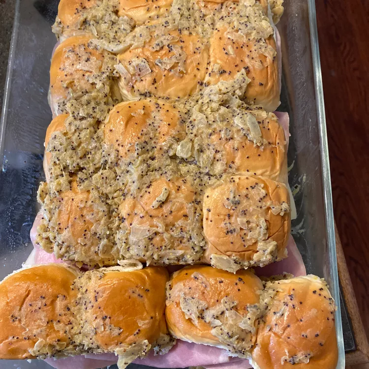

Hawaiian Ham and Cheese Sliders

A launch for any time!
Hawaiian sliders are great for potlucks for something fun and easy to share.
Ingredients
- cooking spray (such as Crisco®)
- ½ cup butter
- 1 onion, minced
- 3 tablespoons Dijon mustard
- 1 tablespoon poppy seeds
- 2 teaspoons Worcestershire sauce, or more to taste
- 1 (12 count) package Hawaiian sweet rolls, split, or more as needed
- 1 pound sliced deli ham, or more as needed
- 8 slices Swiss cheese, or more as needed
Steps
- Preheat the oven to 350 degrees F (175 degrees C). Spray a 9x13-inch baking dish with cooking spray.
- Melt butter in a saucepan over medium-low heat; cook and stir onion in the melted butter until softened, 5 to 10 minutes. Add mustard, poppy seeds, and Worcestershire sauce; cook and stir for 5 minutes.
- Arrange the roll bottoms in the prepared baking dish. Spoon 2/3 of the onion mixture over top. Add ham and cheese to each roll. Place the roll tops over the cheese layer, then brush the remaining onion mixture over top. Cover the dish with aluminum foil.
- Bake in the preheated oven for 15 minutes. Remove aluminum foil and bake until the roll tops are lightly browned, 5 to 10 minutes.